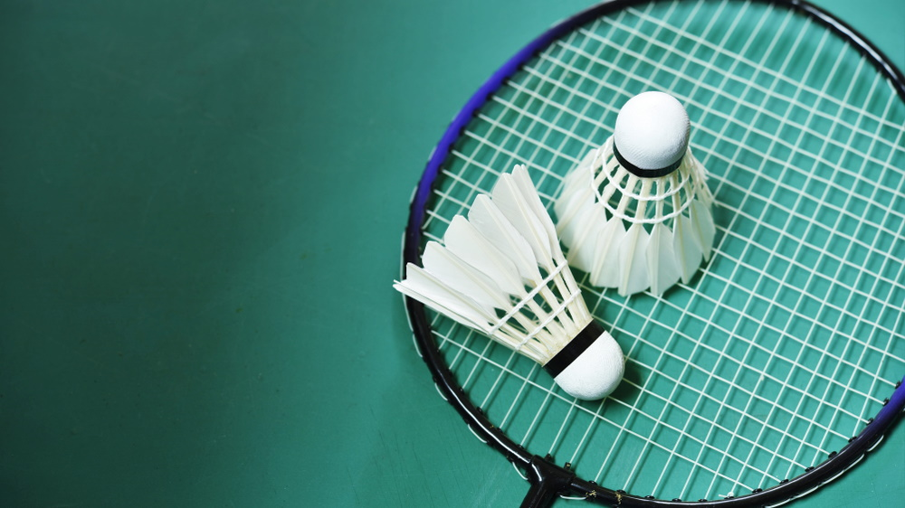

I love to watch lots of movies/series. Movies allow us to feel different emotions, thrill, happiness, sadness, intensity, comfort, shock, nervous. Among of them some movies i loved most here are some Titanic, Star Wars, The Godfather, The Shawshank Redemption, Pulp Fiction, The Matrix, Seven Samurai, The Avengers etc. And here are some series's list i liked most Money Heist, Stranger Things, Game of thrones, Peaky Blinder, Prison Break, Narcos and so on. Recently i have seen outer banks thats literally fabulous. Movies have a way of letting you vicariously live other lives, and glimpse other perspectives through image and storytelling. If you enjoy the movie it allows you to fantasize and imagine what you could do in that world or situation.
2. Games:
Usually i dont play games too much but sometimes i play "PUBG" that is a online game. I used to play many offline and offline games when i was like 15 or 16. I would play Subway Surfers, GTA 5, Class of clans, Clash Royal and so on. Among them i like to play PUBG when i get bored. Because its very much competitive game you know!

3. Sports:
Basically, i like to play Football, Cricket and Bad Minton. I used to play Cricket every single day when i was like 17 or 18. But now due to pandemic issue cricket are not played. And i like to menrtion that i play bad minton and that's spectacular. I won Badminton Championship when i was in class 10. I think these activities or sports whatever you say are really fundamental for everyone's life to keep their body fit. And also sports can improve mental health, reduces stress, increases confidence. So everyone should involves with sports.
background: #7AFAC6